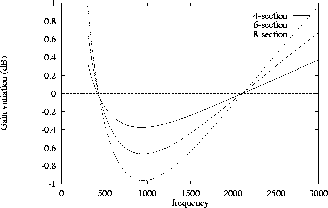
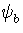
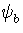

|  |
One of the main selling points of the handbook description of this
network is the claim that low tolerance components can be used
to obtain a high performance network. From the analysis of section 5,
if cyclic symmetry is maintained, the network will perform
perfectly at the n selected frequencies corresponding to
f = 1/(2 RC)
for each network section. Since matching components is generally easier
than measuring their values accurately, I examine the effect of a change
of these node frequencies caused by perfectly matched, but low tolerance
components. Since both the resistors and capacitors can vary, using
10 percent components can vary the nodal frequency values by approximately
20 percent if both components change value in the same direction.
A worst case condition would be for all the sections to have too high
or too low of a frequency by 20 percent. This simply shifts the network
center frequency by 20 percent. For the optimal 6 section filter from 300 Hz
to 3000 Hz, this changes the sideband suppression from over 60 dB to about
42 dB. If a 10 percent variation of network node frequencies is assumed,
that is 5 percent components,
and again all the frequency changes are assumed to be in the same
direction, the suppression is nearly 50 dB. This shows that
relatively low tolerance but well matched components can give
excellent results. Eq. 31 can be easily used to predict the
effect of changing the RC values of each filter section due to
component tolerances when the components are perfectly matched in
each section.
RC)
for each network section. Since matching components is generally easier
than measuring their values accurately, I examine the effect of a change
of these node frequencies caused by perfectly matched, but low tolerance
components. Since both the resistors and capacitors can vary, using
10 percent components can vary the nodal frequency values by approximately
20 percent if both components change value in the same direction.
A worst case condition would be for all the sections to have too high
or too low of a frequency by 20 percent. This simply shifts the network
center frequency by 20 percent. For the optimal 6 section filter from 300 Hz
to 3000 Hz, this changes the sideband suppression from over 60 dB to about
42 dB. If a 10 percent variation of network node frequencies is assumed,
that is 5 percent components,
and again all the frequency changes are assumed to be in the same
direction, the suppression is nearly 50 dB. This shows that
relatively low tolerance but well matched components can give
excellent results. Eq. 31 can be easily used to predict the
effect of changing the RC values of each filter section due to
component tolerances when the components are perfectly matched in
each section.
The case where unmatched R and C values in each section are used
is of course the one with the most practical interest. Here, we
can get an idea of what the worst case possibilities are by looking
at the cross terms between  and  when the M
matrices are no longer cyclic. Typical terms give contributions like,
and  when the M
matrices are no longer cyclic. Typical terms give contributions like,
| (29) |
|
| (30) |
As a concrete example of this sensitivity to unmatched components, I calculated the the suppression of the original HA5WH 6 section filter for the case where only the resistors in the last section have been changed by 10 percent. R1 and R3 have been raised by 10 percent, and R2 and R4 have been lowered by 10 percent. For ideal components, the suppression is greater than 57 dB. Changing just the resistors in the last section reduces the suppression to 26 dB, in rough agreement with the simple calculation above. Using these results to try to cook up a near worst case, I tried changing all the resistors in exactly the same manner in each section. In addition I changed all the capacitors by making raising the C2 and C4 values by 10 percent and lowering the C1 and C3 values by 10 percent. The result was to further lower the unwanted sideband suppression to about 17 dB. Clearly, 10 percent components and bad luck will produce an unacceptable sideband suppression.
One last comment on the handbook circuit is the design
of operational amplifier circuit for the output. One section of
this circuit is shown in fig. 6. All the resistors
have the same value in the handbook circuit.
This does not
give a balanced output, and would be another source of phasing
errors. If I assume that the operational amplifier input impedances
are very large, the input impedance at point 2 is clearly 2R2 .
The voltage at the noninverting input is therefore V2/2 .
The current drawn from input 1 is therefore
,
and since V1 = - V2 with perfect phasing, the impedance seen
at input 1 is 1.5R1 . So 2R2 should be equal to 1.5R1 ,
and in addition, dc balancing of the operational amplifiers may
be required to compensate for input bias current. For the handbook
circuit, the unbalanced output resistance reduces the sideband
suppression even in the ideal component case to about 35 dB.
Note Added after original publication as mentioned in the errata, the above paragraph is incorrect. The original circuit will work fine. The circuit with the resistor ratio of 4/3 also works.